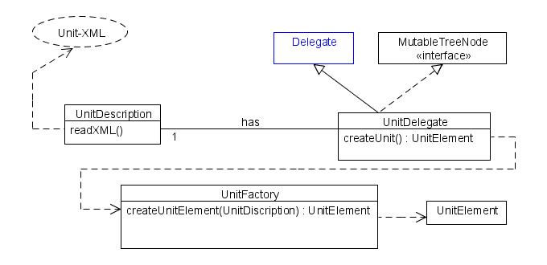
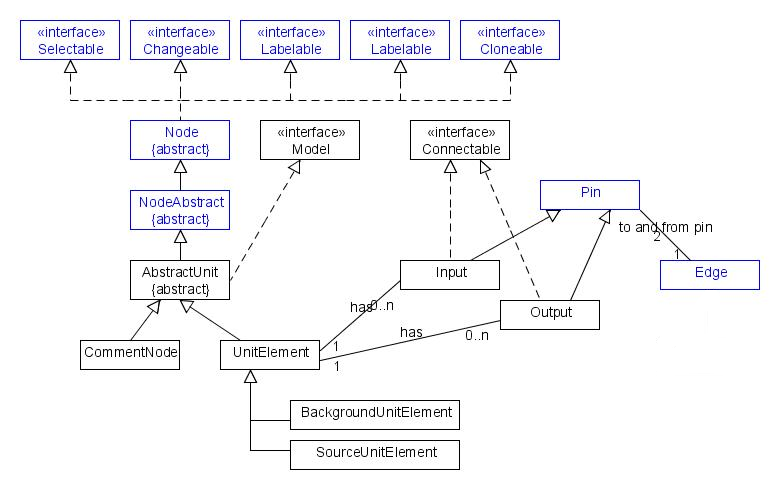

A quick look at, how a workflow is created.
On the start of the program, the DelegatesController is created and searches a specified (hardcoded :/) directory.
This directory is read recursively and each subfolder and their containing XML are put into a hashmap.
Based on this Hashmap the Menu-hierarchy is created.
Based on each XML a UnitDescription-object is created, which contains the information to construct a unit element instance of this type. This UnitDescription can later be passed to a UnitFactory, which creates an actual instance of this UnitElement. The UnitDescription is stored in a UnitDelegate, which is basically a Delegate, that contains meta-information about the unit. The delegates are listed in the insert-menu.
The actual instance of a UnitElement is created by giving the UnitDescription to the UnitFactory, who constructs a corresponding object.
This shows all relevant classes for the workflow. DataTypes are not included. 